01
Identify National Drivers
Estimate the relative importance of socioeconomic, physical, proximity and accessibility factors linked with built-up expansion.
A national-to-divisional multi-model analysis of built-up change between 2010 and 2020. The study combines Logistic Regression, Random Forest, XGBoost and Artificial Neural Networks to distinguish drivers that remain robust across modelling approaches from those whose importance changes with regional geography, hydrology, accessibility and socioeconomic context.
Urban expansion in Bangladesh reflects interacting demographic, economic, physical and accessibility conditions. A national model can identify broad regularities, but it can also conceal how those mechanisms change across floodplains, coastal zones, hilly regions, transport corridors and rapidly urbanizing metropolitan areas.
Estimate the relative importance of socioeconomic, physical, proximity and accessibility factors linked with built-up expansion.
Compare driver rankings across LR, RF, XGBoost and ANN rather than relying on one modelling structure.
Evaluate how driver hierarchies and predictive performance vary across all eight administrative divisions.
Connect national and divisional differences to differentiated urban growth management strategies.
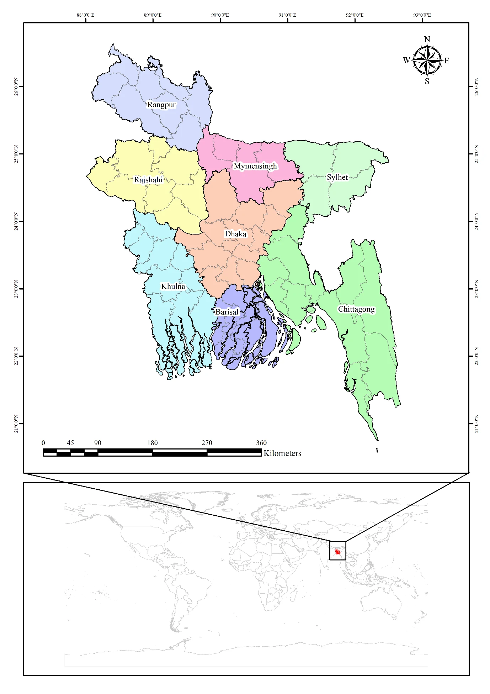
Bangladesh provides contrasting coastal, deltaic, hilly, haor and inland contexts for subnational comparison.
The analysis harmonizes national gridded datasets to a common 100 m grid, constructs a balanced sample of built-up change and non-change pixels, tests multicollinearity, and evaluates four complementary models at national and divisional scales.
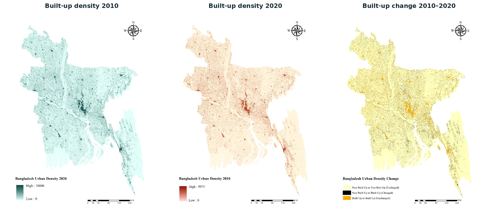
GHSL built-up surfaces were used to identify change between 2010 and 2020.
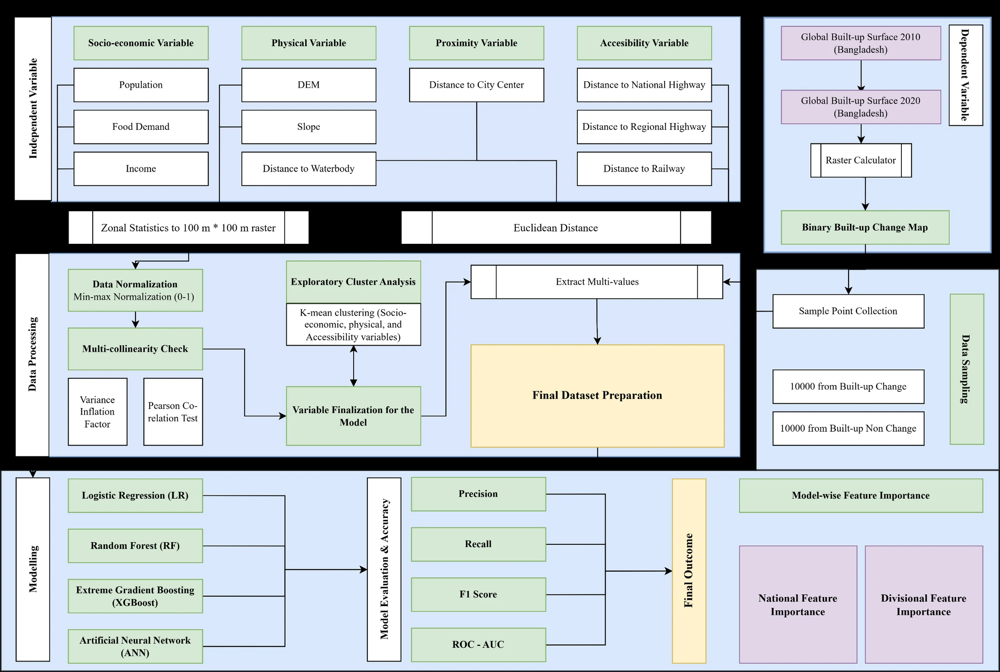
National-to-divisional multi-model workflow from data preparation to factor importance.
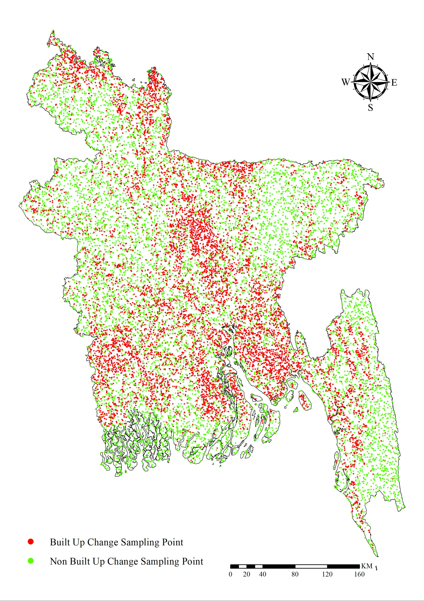
Balanced built-up-change and non-change sample points.
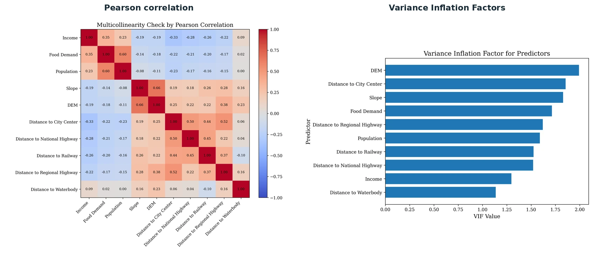
Correlation structure and VIF diagnostics for the predictor set.
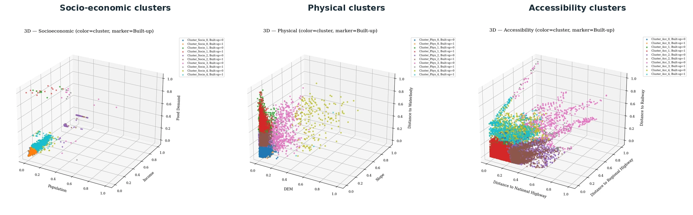
Exploratory K-means clustering illustrates distinct socioeconomic, physical and accessibility structures associated with urban change.
Rather than explaining built-up change through one mechanism, the study evaluates demographic demand, economic conditions, terrain, hydrology, urban proximity and transport accessibility within a common national framework.
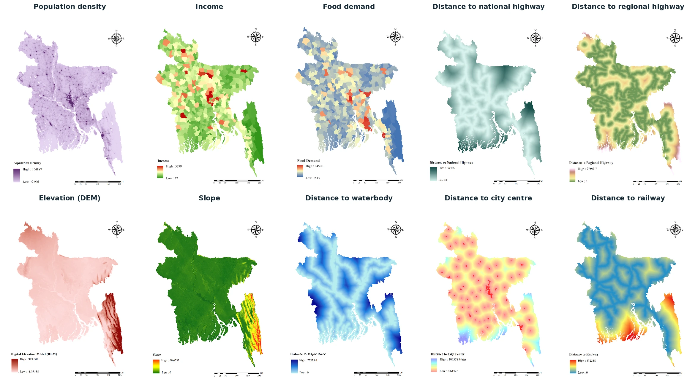
Nationally harmonized spatial predictors reveal strong contrasts in population concentration, terrain, hydrology and transport accessibility.
Despite substantial differences in model structure, the national results converge on a common explanatory pattern. Population density dominates the importance hierarchy, while elevation repeatedly emerges as the second major organizing factor.
Adds directional interpretation of standardized predictor relationships.
Highest national AUC and strongest overall discrimination.
Highest national recall and F1; particularly sensitive to expansion cases.
Captures nonlinear relationships and contributes an independent importance ranking.
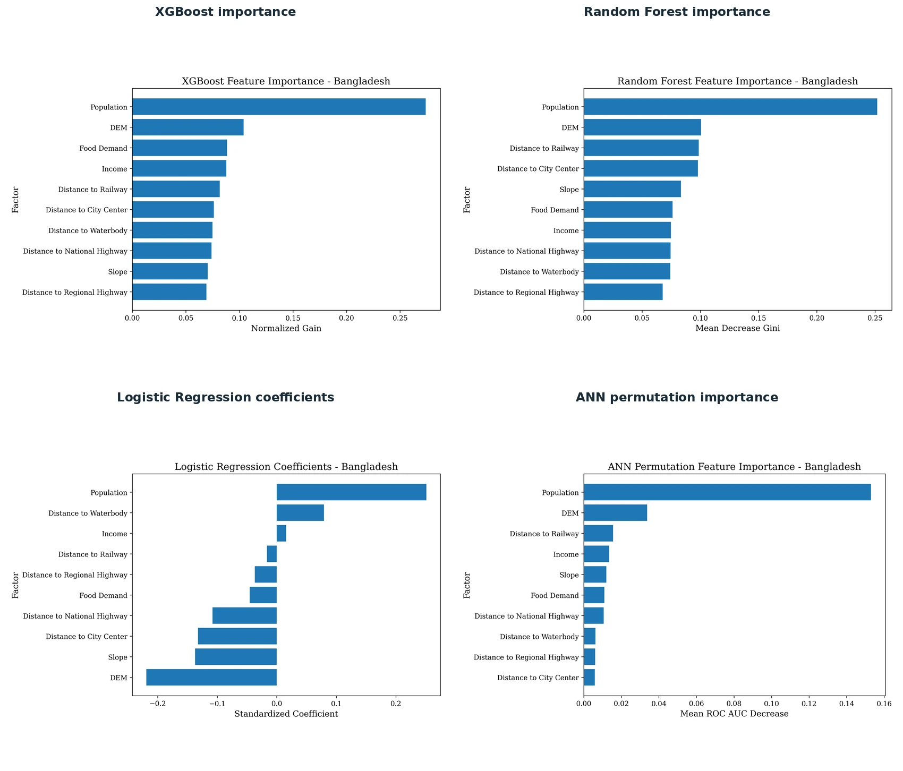
Relative importance is interpreted through ranking consistency rather than direct numerical equivalence among methods.
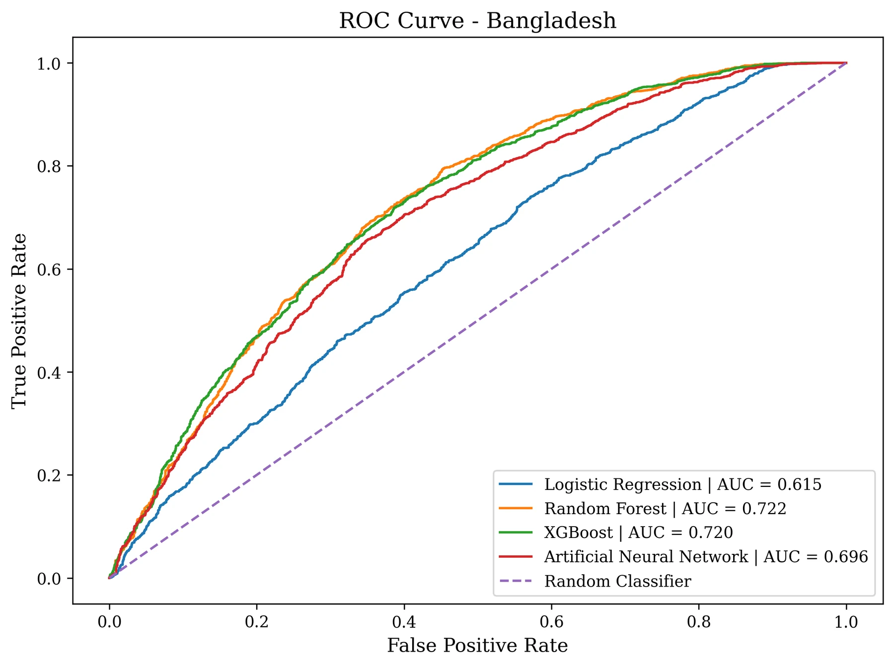
Ensemble models RF and XGBoost achieved the strongest national discrimination.
Model performance and factor hierarchies vary considerably across Bangladesh. Divisional AUC values range from 0.627 to 0.819, demonstrating that the separability of expansion and non-expansion—and the mechanisms associated with them—depend strongly on regional context.
Riverine and coastal geography gives highway accessibility an unusually strong role, supporting corridor-sensitive growth management.
A terrain-sensitive profile in which higher and steeper areas constrain expansion, reinforcing the importance of slope-aware zoning.
Growth reflects demographic concentration, economic opportunity and accessibility to urban cores and major transport corridors.
Coastal elevation, transport networks and hydrological constraints condition the direction of population-driven expansion.
Urban change is environmentally conditioned, with water proximity acting as a meaningful spatial discriminator alongside demographic growth.
A compact-city and river-adjacent context where demographic demand is robust and urban-core accessibility remains important.
Socioeconomic demand and selected accessibility variables operate as secondary drivers behind population and terrain.
A strong population–terrain structure shaped by haor ecology, with waterbodies functioning as important spatial separators.
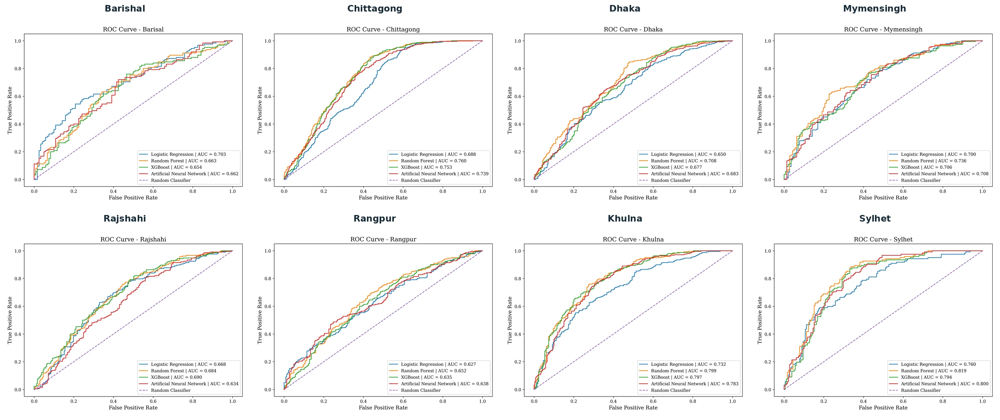
Division-wise ROC curves show substantial variation in model discrimination.
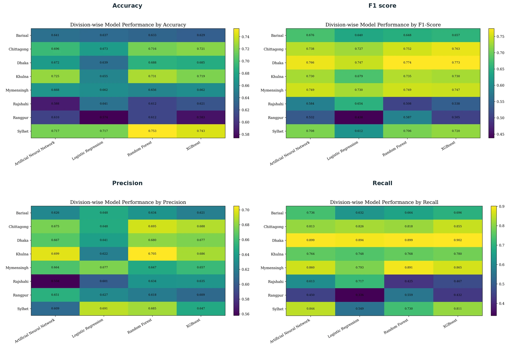
Accuracy, F1, precision and recall reveal different strengths across divisions and model types.
The study argues against nationally uniform urban-growth policy. Instead, national regularities should provide a common baseline while divisional driver profiles shape the spatial instruments used to manage growth.
Integrate demographic pressure into spatial master plans, strengthen secondary urban centres, and address both demand- and supply-side drivers of concentrated urbanization.
Use terrain thresholds and safe-gradient standards in coastal, deltaic and hilly divisions where physical suitability consistently structures urban expansion.
Manage ribbon growth in Barishal, support accessible-node development in Dhaka, and use rail-oriented growth strategies where railway proximity appears as a secondary driver.
Formalize riparian buffers, wetland and haor conservation zones, drainage corridors and coastal hydrological boundaries in water-constrained divisions.
Prepare dedicated divisional Urban Growth Management Strategies supported by comparable national spatial baselines and regular monitoring.
Use ensemble performance together with cross-model convergence of driver rankings so policy is not distorted by the assumptions of a single analytical method.
Population density and elevation provide the most persistent explanatory structure for built-up change across Bangladesh, but they do not constitute a complete national rule. Accessibility, hydrology, income, food demand, slope and railway proximity become important selectively, depending on each division’s physical and socioeconomic setting. The value of the multi-model framework therefore lies in distinguishing robust national drivers from context-dependent regional mechanisms and translating that distinction into geographically responsive urban growth management.